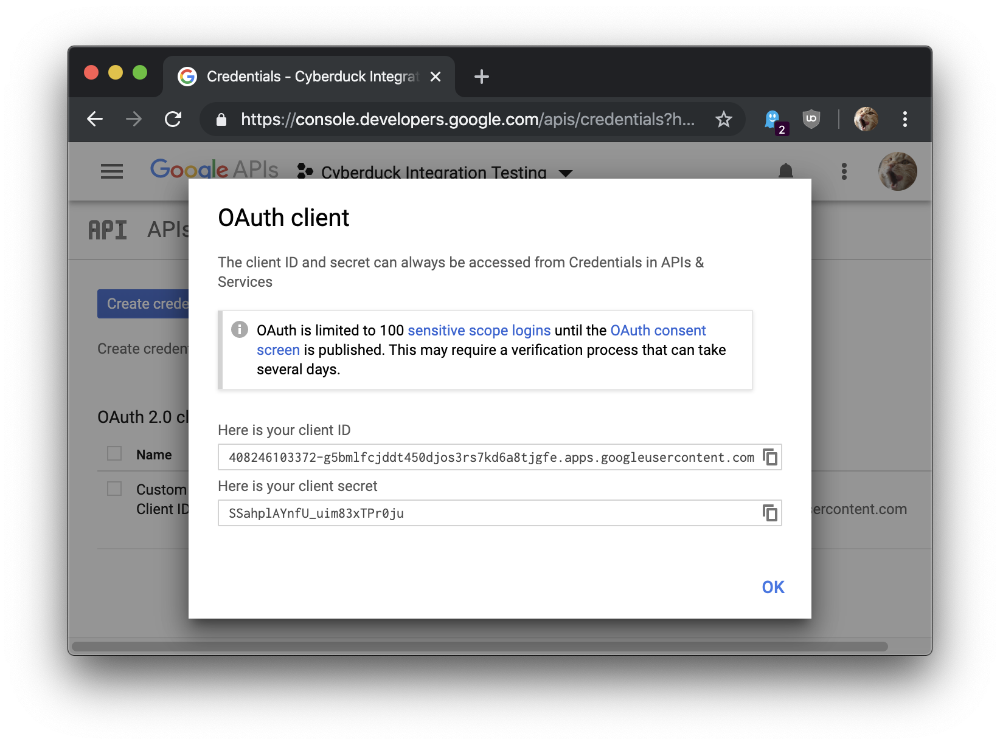
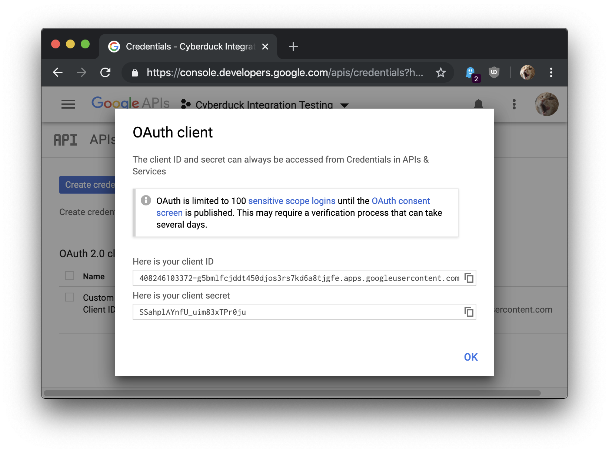

Custom OAtuh 2.0 Client ID for Google Cloud Storage and Google Drive¶
To use OAuth 2.0 in your application, you need an OAuth 2.0 client ID, which your application uses when requesting an OAuth 2.0 access token.
Verification Issue¶
Login using OAuth is currently failing with the default OAuth Client ID application registration in Cyberduck. When attempting to allow access for Cyberduck to Google Drive, the following error is displayed.
Error
Sign in with Google temporarily disabled for this app. This app has not been verified yet by Google in order to use Google Sign In.
As a workaround, you can register your own OAuth Client ID to connect to Google Drive. For Google Storage you can use Interoperable Access as a workaround.
Register Client ID¶
Follow the steps in Setting up OAuth 2.0. From Credentials copy the Client ID and Client secret by choosing the action Edit OAuth Client.
 

{kind=link}
Edit the OAuth Consent Screen to add the scopes Google Cloud Storage JSON API ../auth/devstorage.read_write and/or Google Drive API ../auth/drive. You will first need to enable Google Drive in the Google API Library.
Edit Custom Connection Profile¶
Create a custom connection profile with the following properties.
OAuth Client ID. Override the registered application client id.OAuth Client Secret. Override the registered application client secret.